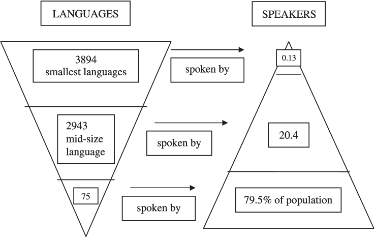
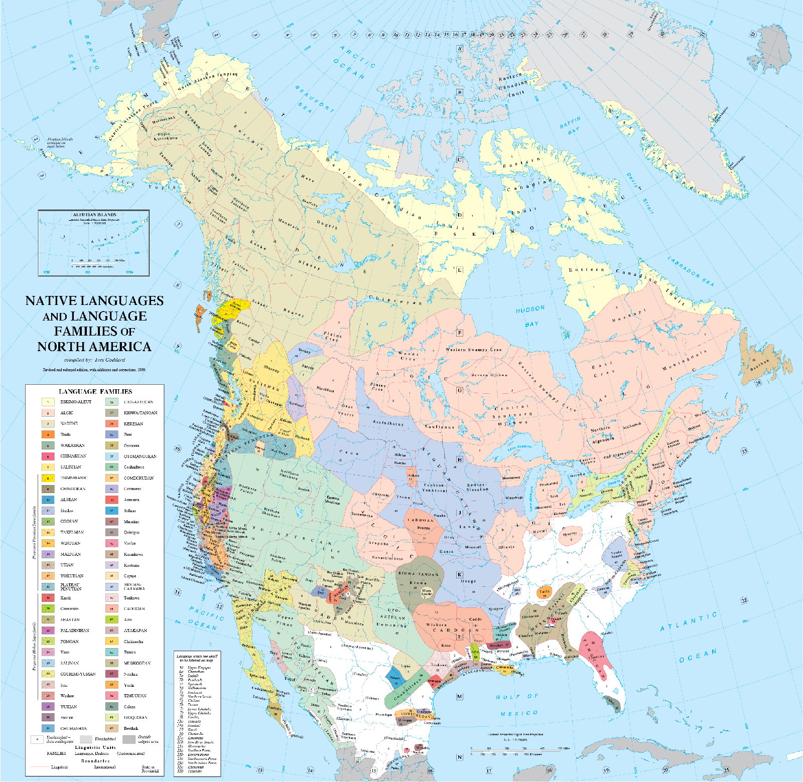

“Je’intavea’”, Juan said on a sweltering day in 1999 in the small town of Intuto, Peru to his brother, Amadeo García García. Nobody else on Earth understood these words uttered by Juan other than Amadeo. In Taushiro, the phrase meant, “I am so ill”; much like the rest of this tribe settled into the jungles of the Amazon, Juan had succumbed to disease. Once numbered in the thousands, the Taushiro tribe had dwindled to two, Juan and Amadeo, and it was not looking good. “Ta va’a ui”, Juan said finally. I am dying. When his brother passed later that day and when asked how he felt, Amadeo responded in broken Spanish with, “It’s over now for us”. He was the sole survivor of his tribe and culture; no one else spoke his language anymore. The entire survival of his culture would be in his hands (Casey 2017).
When Amadeo dies, this is yet another language and culture lost within the area of the Peruvian Amazon. What was once a rich, vast linguistic repository is now an area with more than half of the languages at risk of disappearing, losing at least 37 languages in the last century (Casey 2017). The Taushiro and other indigenous groups have faced various adversities when it comes to the vitality of their respective languages, and it can be reflected in the history of the area and its people. Language transcends people as it is, “central to cultural identity”. Founding director of the National Museum of the American Indian, Richard West says that language is, “the code containing the subtleties and secrets of cultural life” and it, “determines thought”. It’s critical to value and preserve each language, and with the number of endangered languages and already extinct languages, it has become a priority for United Nations Educational, Scientific and Cultural Organization (UNESCO) to implement policies and programs that drive linguistic diversity and honor endangered languages.
Endangered Languages
Every 14 days, a language dies. By 2100, more than half of the more than 7,000 languages spoken on Earth—many of them not yet recorded—may disappear, taking with them a wealth of knowledge about history, culture, the natural environment, and the human brain
Languages are constantly dying, and with the endangerment of a language comes the endangerment of its rich history, culture, and natural environment.
“When a language disappears, it is not only a whole system of thought, a vision of the world and a frame of reference that are wiped out, but also all the ancestral knowledge and beliefs conveyed by that language—and it is irretrievable. An entire heritage, a line of descent, is broken, and descendants are deprived of the ties that bind them to their ancestors, their history and their beliefs.”
There are more than 7,000 documented languages spoken across the world and more than half of all languages are in danger of falling into disuse, according to the World Economic Forum and the United Nations Educational, Scientific and Cultural Organization (UNESCO). By the end of the century, it is predicted that 1,500 known languages will no longer be spoken (Wood, 2005). The majority of languages that are spoken in the world are only spoken by a small percentage of speakers as there are dominant languages throughout the world. The discrepancies between the number of languages and speakers are astonishing and can be depicted in the graphic below. In Figure 1, only 0.13 percent of speakers worldwide speak 3894 languages, while nearly 80% of the population speaks 75 languages. With more than half of the world’s languages in danger of disuse, the disparity between each of these numbers becomes even more vital as linguistic diversity is navigated. For a language to be considered endangered, it means that there is a significant loss of speakers of the language and the vernacular is no longer being passed from one generation to another.
Figure 1: Languages in the World to Speakers Ratio
With the natural processes of human cultural evolution and globalization, linguistic diversity is under threat. Characterized by its vitality through intergenerational language transmission, absolute number of speakers, language use within existing domains, and the proportion of speakers existing with the total (global) population, languages follow human groups and will adapt and create themselves throughout human interconnectivity. By understanding globalization, economic integration, and the rise of dominant languages, linguistic preservation can be scrutinized at a more detailed level through linguistic analysis. With the rise of dominant languages and globalization, it is imperative to work towards understanding the multifaceted challenges faced by endangered languages, including Maori and Navajo, and the preservation of disappearing and at-risk languages. Both indigenous languages are fit for a linguistic analysis as both, with great cultural and historical backgrounds, have navigated the story of human globalization and interconnectivity.
With approximately 7,000 languages spoken worldwide today and only a small fraction of the language being truly global, there is a huge discrepancy between all languages and languages that are at risk. There are massive disparities between the sizes of populations speaking the world’s many languages. Only 359 languages are truly global, meaning that it is spoken by millions of people, including Mandarin Chinese, English, Spanish, and Hindi. These are languages that have a vast amount of speakers and global spread, with English being the language with the most non-native speakers. The remaining languages have far more limited speakers, and many are at risk of extinction. According to UNESCO, a language is considered endangered when the language is “on the path to extinction”. With the role of upholding peace and security via promoting international cooperation in education, the sciences, culture, communication, and information, the United Nations Educational, Scientific, and Cultural Organization has a vital responsibility for the maintenance of language diversity. As language can be a large signifier of culture and distinct communities, everyone has the right to freedom of expression in a language of their own choice on the Internet and in the public domain; this is emphasized in the Universal Declaration of Human Rights.
“94 percent of the world’s population speaks 6 percent of its languages, and six percent of the world’s population speaks 94 percent of its languages.”
Navajo
The region in the world with the most endangered languages is the Americas, with the majority being in the United States. Many of the indigenous languages of American Indian tribes are disappearing as the ethnic populations are blending into mainstream society while the native speakers are growing older and dying. This is seen through the effects of European settlement, as by the middle of the 20th century, around two-thirds of all indigenous American languages had died out or were on the brink of disappearing. More than half of Native languages have become extinct, and of the ones that are still existing, more than half are spoken by fewer than 1,000 people (Babbel). In North America, only approximately 150 Native languages are spoken, with most at risk of dying out.
The most widely spoken native language in the United States is Navajo, spoken by approximately 170,000 people who make up the Navajo tribe, one of the healthiest of the 70 tribes remaining in North America (Navajo 2019). Known as Diné Bizaad, Navajo is spoken mostly on reservations and other areas in New Mexico and Arizona. Considered by UNESCO as a ‘vulnerable’ language, which is the lowest tier of ‘endangered’ language, Navajo has been sharply declining in recent decades as children have not been taught the language in schools. In the Leupp Public School on the Navajo reservation in Arizona, there was an immersion survey that showed that only 7 percent of students could speak Navajo fluently (Gibbs 2002). These children would use the language when doing home and land chores, learning their culture, or doing traditional dances. The program at this school struggled to recognize qualified teachers of the language as well as resources and community support.
Figure 2: Native Languages and Language Families of North America
Several factors can point towards the decline of the Navajo culture and languages, including the aging population, a declining number of monolingual speakers, a preference for English amongst bilinguals, western schooling, and changes in lifestyle and economy (Landsberry). Colonialism, in particular, has brought immeasurable suffering to the indigenous people in the Americas. There is a ‘language shift’ happening in North America, as the intergenerational transition of Native languages breaks down and slowly people are not speaking it as it is no longer socially or economically viable as English. Navajo has been rapidly shifting.
Historically, many legislative, policy and regulations have impacted Native languages negatively. The Bureau of Indian Affairs (BIA) has implemented an acculturation or domestication process where they have been restricted from speaking their Native tongue (Todacheeny 2014). There would be a strict punishment if these present-day parents and grandparents were caught speaking Navajo. This is considered the start of the loss of the indigenous language. With the No Child Left Behind Act, implemented in 2002, there has been a decrease in the use of the Navajo language amongst school-aged children as the enforcement and regulation of high academic achievement in English has impacted the strength of language fluency. This Act eliminated bilingual education in the state of Arizona and created the optional “foreign language elective” for many schools, leading to the questioning of Native leaders about the effectiveness and suitability of this act within their communities. The United States government’s Bureau of Indian Affairs has slowly eroded the use of the Navajo language and other indigenous languages (Todacheeny 2014).
Throughout North American history, there has been an effort towards assimilationist policies, including the punishing of speaking native, indigenous languages and having a policy of an “English-only” education. During the late 19th and 20th centuries, the United States government established boarding schools for Native children to assimilate the children, and these schools had policies that prohibited the use of indigenous languages (Todacheeny 2014). The Dawes Act of 1887 encouraged the adoption of Euro-American lifestyles and customs, including the adoption and widespread use of English. Throughout history, it is evident that colonialism and the national government of the United States have negatively impacted the vitality of the Navajo language amongst other indigenous languages.
During World War II, there was more sentiment and awareness raised for the Navajo population and language as the language was used in Code Talking, among other Native languages. Because the language was so complex, Navajo could be used to encode, transmit, and decode messages. Through this, there was an upsurge of interest in the language, but after the war, it became less popular and the national sentiment towards indigenous languages and populations declined. Even with the loss of Native languages and anti-bilingual federal and state education policies, certain Native communities have been able to revive the lost languages through books and articles about the languages.
To safeguard the decrease of this language, officials are promoting and preserving the language with educational programs. This effort to preserve the Navajo language started with missionaries creating an alphabet for the languages, based on the English alphabet, and now, there are efforts towards developing educational programs for the language. In the 1980s, numerous immersion schools were established in the hope of revitalizing the Navajo language, but the only successful one was Fort Defiance School in the capital of the Navajo Nation. Various schools attempting to preserve the Navajo language would provide instruction primarily in Navajo during the earlier grades with English being introduced gradually as students progress. In 1990, the U.S. government passed the Native American Languages Act to promote and protect Native, indigenous languages, including Navajo. Alongside these programs, the Navajo Language Academy has been dedicated to the scientific study, promotion and preservation of the Navajo language, playing a large role in educating Navajo language teachers and promoting the language revival methods. Even with the implementation of educational programs to revive the Navajo, they have been thwarted and countered by federal and state education laws, in addition to the national economic competition moving towards the English language as an advantage.
te reo Māori
In a similar vein to the Navajo language, the Māori language has been impacted by European colonization and efforts to suppress the language. The language is now considered ‘vulnerable’ by UNESCO as an endangered language. Based on New Zealand census data, only around 3% of the population speaks te reo Māori in the country where it originated. Where did this language endangerment begin?
Known as te reo Māori with “Te reo” meaning ‘language of’ and ‘Māori’ meaning ‘normal or natural or mortal human being’, this language has been in development for over many hundred years in Aotearoa (‘land of the long white cloud’), also known as New Zealand. As various reputable sources including the Parliament of New Zealand refer to the language and land with these terms, this paper will reflect the sentiment to honor and respect the Māori peoples. Making up the indigenous population of New Zealand, the Māori people have faced a lot throughout history, including European settlement and language dominance. Before the active colonization of Aotearoa by Pākehā or European New Zealanders in the 1800s, te reo Māori was the dominant language, with English and other European languages spoken only by the settlers. At first, Pākehā that arrived were learning te reo Māori to communicate and negotiate trade. The local community even adopted te reo Māori writing system, helping them become proficient in the language.
As the settlements of Europeans grew, the language and its speakers were pushed into more confined, separated communities. In schools, te reo Māori was suppressed in an attempt to force the people to assimilate into the European lifestyle. In 1867, the Native Schools Act was implemented into society, establishing a schooling system to assimilate Māori into Pākehā society (Te Petihana Reo Māori). This required English to be the only language written or spoken in, discouraging Māori children from learning and communicating in their language. There were often punishments for children who spoke te reo Māori in schools. At the start of the 20th century, there was a widespread belief that speaking te reo Māori would hinder children from effectively learning English, impeding their integration into Pākehā society. With the societal pressures and punishments implemented by the colonial government, people began discouraged from using te reo Māori, even at home. By 1953, only 26 percent of Māori schoolchildren were proficient in te reo Māori, a substantial 63 percent decline over 40 years, as a result of urban migration, social pressure, physical and verbal discipline of children, and the implementation of ‘pepper potting’ policies (scattering Māori familiar throughout Pākehā communities to promote assimilation) (Te Petihana Reo Māori). These all resulted and contributed towards a multi-generational suppression of the language.
"No Māori newspapers, no television time for Māori language, and only half an hour once a week on the National Radio programme, as well as eight minutes on the Correspondence School programme."
Since the arrival of the Europeans and the governmental, colonial dominance in society, there was a drastic suppression and decline of te reo Māori, so severe that the language was on the brink of extinction. At the beginning of the 1970s, there was a revival of the language as groups worked towards national recognition. In the Māori Language Bill of 1986, the language was recognized as an official language of New Zealand which catalyzed the establishment of institutions safeguarding the language and promoting its use. It's now taught in academic institutions and supported by programming in mainstream media.
Through this intentional programming and advocacy work for the culture and language, the Māori has become an integral part of New Zealand culture, and there are actively many effects towards implementing the language into society. There are te reo Māori associated and spoken radio stations and television channels, and it is integrated into newspapers. With the language revitalization efforts and the increased interest in the language and culture, the number of speakers has increased significantly. This is particularly important for the people of New Zealand to embrace as today, the Māori people comprise 16.5% of the population, but in 2013, only around 3.7% of the five million that made up the country spoke the language (Gunia 2020).
What Next?
Despite the immense cultural and historical value of all of these languages, more than half of all languages are in danger of disappearing, including both te reo Māori and Navajo, impacting global linguistic diversity. Analysis of past language revitalizations and histories must be consumed and applied to the preservation of other endangered languages. With the unanimously adopted Universal Declaration on Cultural Diversity at the 31st Session of the UNESCO General Conference, there was the recognition of the relationship between biodiversity, cultural diversity, and linguistic diversity, and it was clear that actions had to be taken towards preserving and revitalizing these endangered languages (UNESCO). With the analysis of te reo Māori and Navajo, it is clear that supporting and preserving endangered languages and cultures are specific to each situation and can be multifaceted. There must be a focus on reversing the existing language shift by uplifting and supporting languages that are not as dominant. This can be done by supporting and developing holistic and inclusive national language policies that support diversity, including the preservation of endangered languages. These are a technique that the Māori people have utilized in New Zealand, which has been very effective in broadening the Māori culture and language.